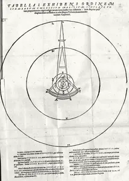
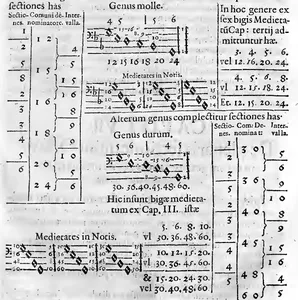
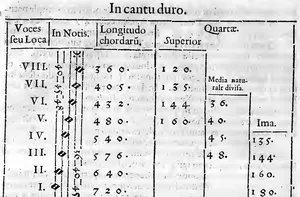
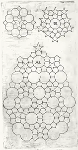
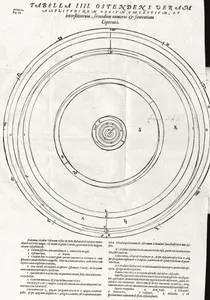
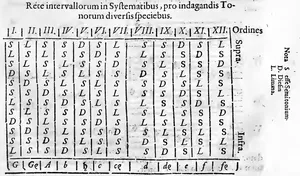

Content of type 'notes'
Dedication & Snow Stars: Notes & Provenance
Composed at Imperial Prague in late 1610 as a playful humanist gift for Privy Councillor J. M. Wackher von Wackenfels, Strena stands in the Renaissance tradition of paradoxical encomia (Praise of Nothing). Yet within twenty-four quarto pages Kepler inaugurated three modern disciplines simultaneously:
Definitions: Notes & Provenance
Prooemium (p. 47–48): Connects Latin congruere / congruentia directly to Greek ἁρμόττειν / ἁρμονία (“fitting together”), grounding Book II’s geometric combinatorics in Kepler’s metaphysical architecture of Creation.
Letter to Mästlin: Notes & Provenance
In October 1597, while corresponding with Michael Mästlin (Frisch I, p. 377), Kepler posed the problem of constructing a right-angled triangle whose three sides form a continuous geometric progression \(a : b : c\). Setting \(a = 1\) and \(b = \sqrt{c}\) forces \(1 + c = c^2\), so \(c = \phi = \frac{1 + \sqrt{5}}{2}\) and \(b = \sqrt{\phi}\). On the letter itself, Mästlin wrote down for a hypotenuse of \(10000000\) the greater segment \(6180340\)—historically the first known decimal approximation of the inverse golden ratio \(\phi^{-1} \approx 0.6180339887\dots\), verified in geometor.kepler.harmonices_geometry.verify_maestlin_1597_decimal to have an exact error below \(1.13 \times 10^{-8}\)!
Praeambulum: Notes & Provenance
Folio Span: Title folio on 0195 (p. 105); Praeambulum & Ratio Ordinis on 0196–0197 (pp. 106–107), concluding with the Capita Libri IV table of contents.

Preface: Notes & Provenance
Published at Tübingen in 1596 under the editorial care of Michael Mästlin—who appended Georg Joachim Rheticus's Narratio Prima (1540) and computed independent Copernican orbital tables—Mysterium Cosmographicum was the first avowedly Copernican treatise published since 1543. More profoundly, Chapter XX introduced a revolutionary physical hypothesis: because planetary periods lengthen more rapidly than circumference alone as distance from the Sun increases, a motivating soul or physical force (*anima motrix* / *virtus*) emanates from the central Sun and weakens with distance. Sending copies to Galileo Galilei and Tycho Brahe in 1597 brought Kepler to Prague in 1600, where Tycho’s Mars observations forced him from eccentric circles to focal ellipses (Astronomia Nova, 1609).
Preface: Notes & Provenance
Renaissance music theorists led by Gioseffo Zarlino (Le Istitutioni Harmoniche, 1558) had observed empirically that pure just-intonation musical consonances employ only ratios built from the integers \(\{1, 2, 3, 4, 5, 6\}\) (octave \(1:2\), fifth \(2:3\), fourth \(3:4\), major third \(4:5\), minor third \(5:6\), major sixth \(3:5\), minor sixth \(5:8\)), whereas seven (\(6:7, 7:8\)) sounds harsh and dissonant—yet Zarlino offered only numerological excuses (senarius).
Prooemium: Notes & Provenance
Title page on 0091; Prooemium runs 0092–0098; Synopsis Capitum printed on 0099.
Chapter I: Notes & Provenance
Spans 0100–0111 (pp. 10–21). Resolves the ancient Zarlino vs. Vincenzo Galilei dispute over senario tuning by grounding consonance geometrically.
Chapter I: Notes & Provenance
Spans folios 0198–0210 (pp. 108–120).

Chapter I: Notes & Provenance
Anti-Instrumentalism: Kepler’s refutation of the ex falso quodlibet reading (made famous by Andreas Osiander’s anonymous preface to Copernicus’s 1543 De revolutionibus) marks a decisive watershed in the philosophy of science. Even Tycho Brahe, though dissenting on Earth’s motion, adopted Copernicus’s insight that the Sun centers the five planetary orbits.

Chapter III, Prop. VIII: Notes & Provenance
Kepler’s Third Law \((T_1 / T_2)^2 = (a_1 / a_2)^3\) (Book V, Ch. III, Prop. VIII) became the decisive quantitative touchstone from which Isaac Newton deduced in Principia (1687, Book I, Props. IV & XI) that a centripetal force holding planets in focal ellipses with \(T^2 = \frac{4\pi^2}{GM} a^3\) must vary inversely as the square of the distance (\(F \propto 1/r^2\)). Two years after Harmonices Mundi, Kepler brought his lifework full circle by issuing the annotated second edition of Mysterium Cosmographicum (Frankfurt 1621), leaving his youthful 1596 text intact while supplying candid Notae Authoris explaining where pure polyhedral geometry required completion by elliptical dynamics and celestial harmony.
Definition I: Notes & Provenance
Printed directly below the ornamental tailpiece and heading De Figurarum Regularium demonstrationibus on p. 6 alongside the woodcut diagram of square \(QPRO\) enclosing cross \(MLN\).
Honeycombs & Rhombic Polyhedra: Notes & Provenance
In geometor.kepler.strena_packing.analyze_rhombic_dodecahedron, each face of the Rhombic Dodecahedron has half-diagonals \(\sqrt{2}\) and \(1\) and edge length \(\sqrt{3}\). By the law of cosines on the rhombus triangles:
Proposition XIV: Notes & Provenance
Printed on folio 0068 (p. 50) directly after Definition XIII.
Chapter II: Notes & Provenance
Spans mid-page on folio 0210 (p. 120) through 0213 (p. 123).

Chapter II: Notes & Provenance
Theological Geometry: Kepler’s theological geometry draws explicitly on Nicholas of Cusa's De Docta Ignorantia (1440), where the infinite sphere is a symbol of the divine essence. For Kepler, the central Sun represents God the Father, the outer stellar sphere God the Son, and the intermediate celestial aura the Holy Spirit. Rectilinear solids act as the archetypal scaffolding through which divine ideas are instantiated in physical magnitude.
Chapter II: Notes & Provenance
Spans 0112–0118 (pp. 22–28).
Chapter IV: Notes & Provenance
Directly bridges Book V Chapter III’s Third Law (\(T^2 \propto a^3\)) to the specific Just-Intonation scales of Chapters V–VII.
Definition II: Notes & Provenance
Definition II spans the bottom of folio 0023 (p. 6) and the top woodcuts of folio 0024 (p. 7), depicting the pentagon \(ABCDE\) alongside the circumscribed pentagram \(FGHIKE\).
Proposition XV: Notes & Provenance
Middle of folio 0068 (p. 50).

Sphere Close-Packing: Notes & Provenance
A remarkable geometric subtlety appears in Strena §§11–12: Kepler describes two ways of stacking horizontal sphere layers so that each interior sphere touches twelve neighbors:
Chapter III: Notes & Provenance
Begins midway down folio 0118 (p. 28) and continues through the upper half of 0121 (p. 31), ending directly before CAPUT IV..
Directly cited in Chapters VI and XIV.
Chapter III: Notes & Provenance
Begins near bottom of 0215 (p. 125) and runs through 0218 (p. 128).
Chapter III: Notes & Provenance
Kepler’s fourth criterion—that secondary solids arise facta commutatione (“by interchange”) from primary ones—is one of the clearest early Renaissance statements of polyhedral polar duality (exchanging face counts and vertex counts: Cube \(\leftrightarrow\) Octahedron, Dodecahedron \(\leftrightarrow\) Icosahedron, Tetrahedron self-dual). Notice that Kepler’s taxonomic split coincides exactly with the modern Schläfli criterion \(q = 3\) (primary) versus \(p = 3, q > 3\) (secondary).

Chapter V: Notes & Provenance
Folio 0297 (p. 205) adapts the 13-pitch monochord proportions of Book III Chapter VI & VIII directly to Tycho Brahe’s orbital angular velocities.
Definition III: Notes & Provenance
Illustrated on p. 7 by two sheared rhombi \(NMPO\) and \(GEKD\) set side by side in the text column.
Pentamerous Blossoms & the Six-Cornered Snowflake: Notes & Provenance
In fol. 0034 (p. 12), Kepler is the first mathematician to formulate the integer recurrence \(1, 1, 2, 3, 5, 8, 13, 21\dots\) explicitly as an algebraic approximation to the continuous ratio of Euclid Book II.11 and VI.30 ([II.11], [XIII.5]). He identifies the vegetative anima formatrix as an operating algorithm that steps discrete integers forward through successive additions (\(F_{n+1} = F_n + F_{n-1}\)) to realize golden pentagonal geometry in flowers and seed chambers without requiring radical calculations.
Proposition XVI: Notes & Provenance
Spans folio 0068 bottom to folio 0069 (p. 51), referencing the gaping three-pentagon woodcut lettered H on the engraved plate.
Chapter IV: Notes & Provenance
Spans folios 0121–0129 (pp. 31–39) of the 1619 Linz editio princeps.
Chapter IV: Notes & Provenance
Notice Kepler’s intellectual candor on folio 0038 (p. 28): he explicitly labels his anthropocentric symmetry argument an honorarium (a bonus reflection, not the load-bearing proof), immediately anchoring the assignment on the empirical Copernican ordering of three superior planets (Saturn, Jupiter, Mars) and two inferior planets (Venus, Mercury). In his 1621 Notae Authoris (Frankfurt, 1621), Kepler retains this sober distinction between poetic analogy and geometric necessity.
Chapter IV: Notes & Provenance
Note printer TOC typo on 0197 listing p. 131; actual display heading CAPUT IV. sits on 0218 (p. 128).

Chapter VI: Notes & Provenance
Legacy anchors hm-cap_04_09* are preserved on this chapter. All interactive studio voices, MIDI exports, and cathedral-organ audio assets derive directly from exact sp.Rational frequencies anchored at \(G_2 = 98\text{ Hz}\) in 5-limit Just Intonation.
Proposition IV: Notes & Provenance
Kepler notes explicitly that if sides were unequal while angles remained equal, this necessity of circumscription would dissolve—marking equiangularity plus equilaterality as jointly essential.
Proposition XVII: Notes & Provenance
Cites plate letter C on folio 0076 showing the collision around an odd polygon.
Chapter V: Notes & Provenance
Starts at the top of folio 0130 (p. 40) and runs through 0132 (p. 42), ending cleanly before the catchword CAPUT VI. at the bottom of p. 42.

Chapter V: Notes & Provenance
Spans folios 0223–0240 (pp. 133–149bis; printer printed page number 149 twice on 0239 and 0240).
Chapter V: Notes & Provenance
Kepler’s remark on folio 0038 (p. 28) about building the Dodecahedron by affixing six roof-like pentahedra (hipped wedges with two pentagon-halves and two triangles) onto the faces of an inscribed Cube refers directly to Euclid's celebrated construction in Elements XIII.17 (Euclid). Likewise, slicing four orthogonal corner tetrahedra off a Cube leaves the regular inscribed Tetrahedron whose edge is the Cube’s face diagonal (\(\sqrt{2}\)), anticipating Kepler’s exact sphere-ratio computations in Chapter XIII. On folio 0039 (p. 29), Kepler also invokes Simplicius’s commentary on Aristotle's De Caelo I.1 citing Ptolemy's lost Monobiblos (On Dimension) to ground three-dimensionality in the mutual orthogonality of three perpendiculars.

Chapter VII: Notes & Provenance
Folio span runs from the bottom of 0299 (p. 207) through 0304 (p. 212, misprinted 213 in the 1619 edition), centered on the full-page musical plates 0301.g1.png (p. 209) and 0302.g1.png (p. 210), plus the five-planet and four-planet tables on pp. 211–212.
Definition V: Notes & Provenance
Illustrated by the decomposed pentagon on folio 0024 with dashed internal diagonals \(DA\) and \(AC\).
Proposition XVIII: Notes & Provenance
Cites marginal plate letters D, E, F, G, H, I, K engraved on folio 0076.
Chapter VI: Notes & Provenance
Kepler’s third point on folio 0040 (p. 30)—that a regular Tetrahedron decomposes into four half-scale regular Tetrahedra and one central Octahedron—anticipates the alternated cubic honeycomb (octet truss) that he revisits in Strena (1611) when refuting Aristotle's claim (De Caelo III.8) that regular tetrahedra alone fill space. Its extreme insphere ratio \(r_{\text{in}}/R_{\text{out}} = 1/3\) matches the dramatic observational gap between Mars (\(1.52\,\text{AU}\)) and Jupiter (\(5.20\,\text{AU}\)).
Chapter VI: Notes & Provenance
Starts near the bottom of folio 0240 (p. 149bis) and runs through folio 0246 (p. 156); the 1619 Linz printer omitted page number 150 after printing 149 twice, so folio 0241 is numbered p. 151. References Kepler’s earlier polemics (De Stella Nova 1606, Antwort auff Röslini Discurs 1609, Tertius Interveniens 1610, and Ephemerides Prolegomena fols. 33–36) and explains the exclusion of the Semisextile (\(30^\circ\)) from music versus its prominence in meteorology via the Roman-senate marriage allegory of Remainders.

Chapter VI: Notes & Provenance
Folios 0133–0134 (pp. 43–44) establish the exact numerical division of Genus Molle (12:15:16:18:20:24) and Genus Durum (30:36:40:45:48:60), illustrated on archival plate 0133.g1.png and later applied to planetary velocities in Book V Chapter V (0297.g1.png). On p. 44 (0134), a printed marginal marker CAP. VI. accompanies the continuation before CAPUT VII..
Chapter VIII: Notes & Provenance
Folio 0305 (pp. 213–214), immediately preceding the forty-two-proposition polyhedral synthesis of Chapter IX.
Definition VI: Notes & Provenance
Accompanied on p. 8 by a pentagon woodcut highlighting center \(L\), radius \(LD\), and side \(DE\).

Proposition XIX: Notes & Provenance
Spans pp. 52–55 (folios 0070–0071) and embeds both 0076.g1.png and fig07_archimedean_planar_tilings.svg. Legacy bundle anchors hm-liber-ii-prop_01_20* are preserved here.
Chapter IX: Notes & Provenance
Spans folios 0306–0335 (pp. 214–243), completing all 49 propositions (Props. I–XLIX), the concluding Epiphonema, and Kepler’s final thanksgiving prayer immediately preceding Caput X. Epilogus de Sole (folios 0336–0347, pp. 244–255).

Chapter VII: Notes & Provenance
Spans folios 0134–0136 (pp. 44–46); primary scale table extracted as 0136.g1.png.
Chapter VII: Notes & Provenance
Spans folios 0247–0266 (pp. 157–176, closing Finis Libri IV. on 0266).
Chapter VII: Notes & Provenance
Point 4 on folio 0041 (p. 31) (Octaedron cum cubo, Icosaedron cum Dodecaedro permutant numerum basium & angulorum) and Point 3 (aequealtum est) jointly articulate both combinatorial duality and metric radial duality—the exact theorem verified symbolically in geometor.kepler.mysterium_spheres.verify_polar_duality_ratios() over \(\mathbb{Q}(\sqrt{3})\) and \(\mathbb{Q}(\phi)\).
Definition VII: Notes & Provenance
Paired immediately with Definition VIII on p. 8 as the philosophical cornerstone of Book I.

Proposition XX: Notes & Provenance
Spans folio 0071 (p. 55) and 0072 (p. 56), closing Kepler’s planar tessellation classification before Proposition XXI turns to four-species impossibility.
Chapter VIII: Notes & Provenance
Look at the exact pairing symmetry revealed on folio 0042 (p. 32): reading outward from Earth (\(R = 1\)), the radial-ratio sequence is golden-dual (Dodecahedron, \(0.795\)) \(\rightarrow\) self-dual (Tetrahedron, \(0.333\)) \(\rightarrow\) rational-dual (Cube, \(0.577\)); reading inward from Earth, it is golden-dual (Icosahedron, \(0.795\)) \(\rightarrow\) rational-dual (Octahedron, \(0.577\)). The entire chapter is typeset on folio 0042 in a graceful tapering colophon (cul-de-lampe) ending with Kepler’s vivid image of the two orders standing heel-to-heel (calcibus invicem) at Earth.

Chapter VIII: Notes & Provenance
Note printer pagination quirk in the 1619 Linz edition: page number 47 appears twice (on both 0137 and 0140). Plate 0137.g1.png is verified on 0137.
Definition VIII: Notes & Provenance
Legacy bundle anchors hm-liber-i-def_01_25* are preserved on this canonical cornerstone definition.

Figure Aa: Notes & Provenance
In Harmonices Mundi Book II (pp. 59–61, engraved Figura Aa), after noting that 5.5.10 fails as a uniform tiling, Kepler refused to abandon fivefold symmetry. Allowing decagons, fused twin-pentagons, regular pentagons, and star pentagrams \(\{5/2\}\), he drew an extraordinary patch with concentric fivefold inflation symmetry and remarked cryptically that “if you truly wish to continue it outward, certain irregularities must be mixed in, with two decagons joined together…”
Chapter IX: Notes & Provenance
Spans folios 0140–0144 (pp. 47bis–54).
Chapter IX: Notes & Provenance
Buried inside Kepler’s qualitative discussion on folio 0045 (p. 35) is a sharp geometric observation that becomes crucial quantitatively in Chapter XVII (0068): when the Octahedron spins about two opposite vertices, four continuous edges trace an unobstructed equatorial square (quatuor continua latera per medium figurae directum iter transeunt), whereas every other Platonic solid presents zig-zagging transverse edges around its equator. Kepler later uses this equatorial square (\(r/R = 1/\sqrt{2} \approx 0.707\)) to explain Mercury’s aphelion sphere.
Definition IX: Notes & Provenance
Printed at the bottom of folio 0025 (p. 8), explicitly cross-referencing Definition VIII above.
Proposition XXI: Notes & Provenance
Top of folio 0073 (p. 57).
Axiom XXII: Notes & Provenance
Folio 0073 (p. 57).
Chapter X: Notes & Provenance
Notice an extraordinary arithmetic check on Kepler’s grand totals on folio 0046 (p. 36): across the five convex Platonic solids, \(\sum V = 50\), \(\sum F = 50\), and \(\sum E = 90\), so \(\sum (V - E + F) = 50 - 90 + 50 = 10 = 5 \times 2\), reflecting Euler’s formula \(V - E + F = 2\) summed over five spheres! Moreover, the total number of plane face-angles is \(2\sum E = 180\), since every edge borders exactly two half-angles at each end—double-counting the edges yields \(2 \times 90 = 180\).

Chapter X: Notes & Provenance
Folio 0145–0147 (pp. 55–57). Explains the mi–fa semitone marker crucial to Earth’s lament in Book V.
Definition X: Notes & Provenance
Top of folio 0026 (p. 9).

Chapter XI: Notes & Provenance
Folio 0148–0150 (pp. 58–60).

Chapter XI: Notes & Provenance
Folio 0048 (p. 38) preserves four crisp 1596 horizontal strip woodcuts showing the antiprismatic equatorial ribbons of the Dodecahedron and Icosahedron superposed over the Octahedron’s central equator (both in-phase and shifted by \(36^\circ\)). Geometrically, Kepler has recognized the pentagonal antiprism core of the Icosahedron and the equatorial Petrie-like decagonal zig-zag of both icosahedral-symmetry solids—an early visualization of polyhedral belt projections.
Definition XI: Notes & Provenance
Followed immediately on p. 9 by the eight ranked Degrees of Knowledge starting at Definition XII.
Proposition XXIII: Notes & Provenance
Folio 0073 (p. 57), citing Definitions V–X and Proposition XVII.
Chapter XII: Notes & Provenance
Printed on folio 0150 (p. 60).

Chapter XII: Notes & Provenance
Primary Witness: Johannes Kepler, Prodromus Dissertationum Cosmographicarum, continens Mysterium Cosmographicum (Tübingen, 1596, Caput XII, pp. 38–43; Editio altera cum notis authoris, Frankfurt, 1621; ed. Ch. Frisch, Vol. I, pp. 138–143).
Definition XII: Notes & Provenance
Marginally underscored in Latin by Hic mensura nota, perfecte, scilicet seipsa & uno actu, mensurat noscibile.
Proposition XXIV: Notes & Provenance
Immediately precedes Proposition XXV (The Five Platonic Solids) on folio 0073 (p. 57).

Chapter XIII: Notes & Provenance
Primary Witness: Johannes Kepler, Prodromus Dissertationum Cosmographicarum, continens Mysterium Cosmographicum (Tübingen, 1596, Caput XIII, pp. 44–47; Editio altera cum notis authoris, Frankfurt, 1621; ed. Ch. Frisch, Vol. I, pp. 143–146).

Chapter XIII: Notes & Provenance
Spans folios 0151–0155 (pp. 61–65), containing Kepler’s eyewitness musical ethnography from Prague.
Definition XIII: Notes & Provenance
Bottom of folio 0026 (p. 9). Includes Kepler’s famous epigram Numerus enim est Geometrarum sermo.

Proposition XXV: Notes & Provenance
Primary Witness: Johannes Kepler, Harmonices Mundi Libri V, Liber II, Propositio XXV (Linz: Tampach/Plancus, 1619, pp. 57–60; ed. Ch. Frisch, Vol. V, pp. 137–140).

Chapter XIV: Notes & Provenance
Tabella IIII vs. “Tabula QUINTA”: On p. 49 (folio 0060), the printed marginal note reads Huc pertinet Tabula QUINTA, whereas the folding copperplate/woodcut plate bound opposite p. 49 (folio 0059) is engraved TABELLA IIII (Ad cap. 14, Pag. 49).

Chapter XIV: Notes & Provenance
Spans folios 0156–0164 (pp. 66–74); although marginal CAP. XV. appears early on 0163 (p. 73), Chapter XIV concludes at the top of 0164 (p. 74).
Definition XIV: Notes & Provenance
Top of folio 0027 (p. 10), initiating Kepler’s reinterpretation of Euclid Book X.

Proposition XXVI: Notes & Provenance
Primary Witness: Johannes Kepler, Harmonices Mundi Libri V, Liber II, Propositio XXVI (Linz: Tampach/Plancus, 1619, p. 60; ed. Ch. Frisch, Vol. V, p. 140).
Chapter XV: Notes & Provenance
In the 1619 print, marginal CAP. XV. appears prematurely on 0163 (p. 73), while CAPUT XV. begins on 0164 (p. 74) and concludes at the top of 0170 (p. 80).

Chapter XV: Notes & Provenance
Tabella V (0062, explicitly captioned Ad cap. 15. Pag. 51) marks a landmark breakthrough in physical astronomy: Copernicus had referenced planetary eccentricities to the mean sun (the empty center of Earth’s orbit, point \(B\)), whereas Kepler insists in Chapter XV on measuring every planetary aphelion and perihelion directly from the true physical body of the Sun (point \(A\)). This seemingly modest technical choice was the direct seed of his dynamical physics in Astronomia Nova (1609).
Definition XV: Notes & Provenance
Kepler’s marginal notes critique both Irrationale and the arithmological Surdi Numeri as misleading translations of Euclid Book X.

Proposition XXVII: Notes & Provenance
Primary Witness: Johannes Kepler, Harmonices Mundi Libri V, Liber II, Propositio XXVII (Linz: Tampach/Plancus, 1619, p. 61; ed. Ch. Frisch, Vol. V, p. 141).
Chapter XVI: Notes & Provenance
Runs 0170–0193 (pp. 80–103, closing Finis Libri III. on 0193).
Chapter XVI: Notes & Provenance
Chapter XVI resolves a common caricature of the Mysterium Cosmographicum: Kepler never imagined physical crystal cubes or brass dodecahedra grinding in the sky. Just as he later cites Tycho Brahe in Chapter XXII (0090), Kepler already treats the Platonic polyhedra here on folios 0065–0068 as purely formal spatial constraints—preparing the conceptual space for free-moving planetary bodies driven by a central solar force in Chapter XX.
Definition XVI: Notes & Provenance
Spans the bottom of folio 0027 (p. 10) into the top of folio 0028 (p. 11).

Proposition XXVIII: Notes & Provenance
Primary Witness: Johannes Kepler, Harmonices Mundi Libri V, Liber II, Propositio XXVIII & Consectarium XXIX (Linz: Tampach/Plancus, 1619, pp. 61–65; ed. Ch. Frisch, Vol. V, pp. 141–144).

Chapter XVII: Notes & Provenance
Folio 0068 (p. 56) presents one of the finest geometric woodcuts in the 1596 editio princeps. Taking unit circumradius \(OX = OH = 1\) (so the octahedral edge is \(\sqrt{2}\)), the cross-section \(QXSH\) passing through two opposite vertices \(X, H\) and two opposite edge midpoints \(Q, S\) is a rhombus with semi-diagonals \(OX = 1\) and \(OQ = 1/\sqrt{2}\) (edge midpoint distance = inradius of the equatorial square!). Its side length is the equilateral-face altitude \(\sqrt{3/2}\), and the perpendicular altitude from center \(O\) onto side \(XQ\) is indeed \(OP = \frac{1 \cdot (1/\sqrt{2})}{\sqrt{3/2}} = \frac{1}{\sqrt{3}}\)—a pure Pythagorean proof ([I.47]) of why \(OP : OQ : OX = 1/\sqrt{3} : 1/\sqrt{2} : 1\)!
Definition XVII: Notes & Provenance
Printed on folio 0028 (p. 11), carefully noting that we measure neither single line nor single square alone, but their joint sum and rectangle.
Chapter XVIII: Notes & Provenance
Chapter XVIII reveals why Kepler sent copies of the 1596 Mysterium directly to Tycho Brahe and Galileo Galilei. Kepler’s candid refusal to fudge numbers—acknowledging every arcminute of mismatch with Copernicus while scrutinizing the error bars of the Prutenic Tables—epitomizes the exact empirical rigor that later forced him to abandon circular orbits over a mere \(8'\) discrepancy in Mars (Astronomia Nova, 1609).
Definition XVIII: Notes & Provenance
Crosses from folio 0028 (p. 11) to the top of 0029 (p. 12).
Chapter XIX: Notes & Provenance
Folios 0080–0081 (pp. 68–69) preserve Michael Mästlin's direct voice inside Kepler’s text—explaining why the Mercury column in Table V (Chapter XV; marginal note on p. 68: “Hi numeri sunt in Tabula V. quae est Cap. XV. ad ☿”) was computed for Ptolemy’s epoch rather than Copernicus’s, and confirming how closely teacher and pupil collaborated during the Tübingen printing. Historically, the \(2^\circ 18'\) residual on Venus proved real rather than observational: in Harmonices Mundi Book V (1619), Kepler finally explained why Venus’s aphelion/perihelion shell departs from the pure Icosahedron through the musical consonances of extremal angular velocities.
Definition XIX: Notes & Provenance
Printed on folio 0029 (p. 12).
Chapter XX: Notes & Provenance
In his famous 1621 Author’s Note to Chapter XX (Frankfurt, 1621), Kepler replaces the word soul (anima) with physical force (vis)—writing that if one substitutes “force” for “soul,” one obtains the exact principle of celestial physics expounded in Astronomia Nova (1609)—and triumphantly points out that his 1596 quadratic-like trial law has now been perfected into the exact sesquialterate proportion \(T_1 / T_2 = (a_1 / a_2)^{3/2}\) in Harmonices Mundi Book V (1619).
Definition XX: Notes & Provenance
Kepler adopts Greek Epharmozusa (‘fitting-on complement’) for the subtracted radical component.
Chapter XXI: Notes & Provenance
Look at Kepler’s table on folio 0087 (p. 75) through modern eyes! Kepler’s 1596 algebraic rule effectively used \(r_2/r_1 \approx \frac{1}{2}(1 + T_2/T_1)\) (arithmetic mean of \(1\) and the period ratio), whereas the true Third Law is \((T_2/T_1)^{2/3}\). For ratios near \(1\) (Mars–Earth, Earth–Venus), \(T_1/T_2\) is close to \(1\) and the linear approximation systematically overestimates the smaller inner ratio \(r_1/r_2\)—explaining the exact positive sign pattern (+36, +43) that Kepler astutely noticed in 1596!
Proposition XXI: Notes & Provenance
Spans the bottom of folio 0030 (p. 12) onto the top of folio 0031 (p. 13).

Chapter XXII: Notes & Provenance
Folio 0090 (p. 78) is arguably the single most prophetic page in the entire Mysterium Cosmographicum. Notice three historic milestones converging on one page: (1) Kepler praises Tycho Brahe by name for dissolving solid celestial spheres; (2) he replaces kinematic equants/epicycles with a physical radial force law centered at the true Sun \(A\) (inverse-distance speed law \(v \propto 1/r\), which is exact at aphelion and perihelion for an ellipse under conservation of angular momentum!); and (3) he flags Earth’s missing equant as an unresolved anomaly—the very clue that guided his war on Mars in Astronomia Nova (1609).
Definition XXII: Notes & Provenance
Printed on folio 0030 (p. 13).
Chapter XXIII: Notes & Provenance
Kepler’s argument against the Annus Platonicus echoes Nicole Oresme’s fourteenth-century De commensurabilitate vel incommensurabilitate motuum celi: if even a single pair of planetary mean motions has an irrational ratio (as forced by \(\sqrt{3}\) or \(\phi\) in the five solids, and later by \((a_1/a_2)^{3/2}\)), their simultaneous conjunction never recurs exactly. Immediately following FINIS. on folio 0095 (p. 83), the 1596 Tübingen volume binds Michael Mästlin's preface and Rheticus's Narratio Prima (0097–0194).
Proposition XXIII: Notes & Provenance
Middle of folio 0031 (p. 13).
Proposition XXIV: Notes & Provenance
Spans folio 0031 (p. 13) bottom onto 0032 (p. 14) with the gnomon-subdivided square diagram labeled \(\theta, \lambda, \pi, \sigma, \mu, \kappa, \xi, o\).
Definition XXV: Notes & Provenance
Printed at the bottom of folio 0031 (p. 14), immediately preceding XXVI. Definitio & Comparatio on 0032.
Proposition XXIX: Notes & Provenance
In Almagest I.10, Ptolemy derived his chord table using the construction Kepler formalizes in Proposition XXIX: bisecting half-radius \(GA\) at \(M\) and swinging arc \(MG\) down to diameter \(PX\) cuts off the divine section (\(PG\) and \(GX\)). Euclid demonstrates in Elements XIII.5 that adding the greater segment \(PG\) to the whole \(GX\) yields a new line \(PGX\) cut in the same ratio, a property Kepler distinguishes carefully from the qualitative classifications of Book X (Elasson and Mizon).

Proposition XLV: Notes & Provenance
Let \(\zeta = e^{2\pi i / 7}\) satisfy \(1 + \zeta + \zeta^2 + \zeta^3 + \zeta^4 + \zeta^5 + \zeta^6 = 0\). Dividing by \(\zeta^3\) and setting \(x = \zeta + \zeta^{-1} = 2\cos(2\pi/7)\):